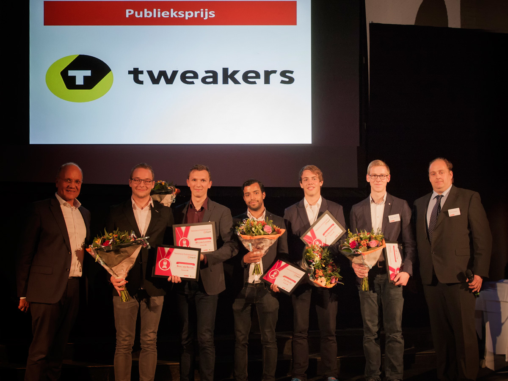

Project B
Android App - Express Me
Ik heb samen met 4 andere studiegenoten in het tweede studiejaar meegedaan met de tweede editie van "Project B"."ProjectB heeft tot doel het leven van mensen met een beperking te ondersteunen of zelfs de kwaliteit van hun leven te verbeteren. Wij dagen je uit om met jouw team informatie technologie in te zetten om voor een deel van deze mensen een oplossing te bieden."
Wij hebben met z'n vijven de app "Express Me" bedacht. Dit is een app die mensen met afasie helpt communiceren. Voor ons prototype hebben wij uiteindelijk de Tweakers publieksprijs gewonnen. Meer informatie over ProjectB en ons project destijds is hier te vinden: tweakers.net/acties/projectb/ProjectB-2015-2016/
Nadat ProjectB was afgelopen, heb ik overwogen om hiermee door te gaan samen met Rick Ossendrijver (rickossendrijver.nl), maar ik had er uiteindelijk toch voor gekozen om er van af te stappen. Rick heeft dit project doorgezet in zijn eentje en de app is nu te vinden in de play store!
Meer informatie over de app nu is hier te vinden: expressme.nl
- Functie : Schoolproject
- Cliënt : Project B
- Jaar : 2015
